Hi, I'm Michelle!
I love telling stories.
I've done that on stage, on public radio, and in the classroom.
Currently, I'm a Journalist-Engineer at The Pudding and Polygraph, where I tell stories on the web, using interactivity to engage and explain.
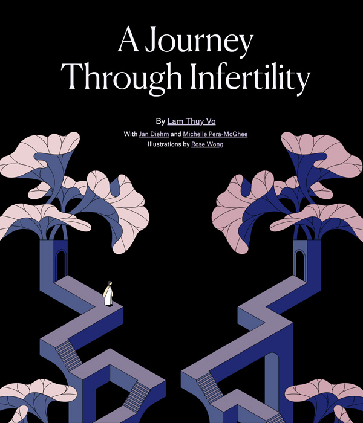
2026 Infertility Journey
A personal, interactive journey about IVF, told from two perspectives.
code 💻 /editor ✏️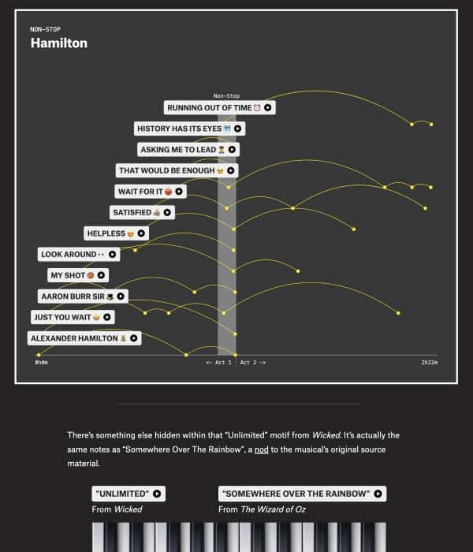
2025 Musical Motifs
Visualizing how musicals use motifs to tell stories.
everything ✨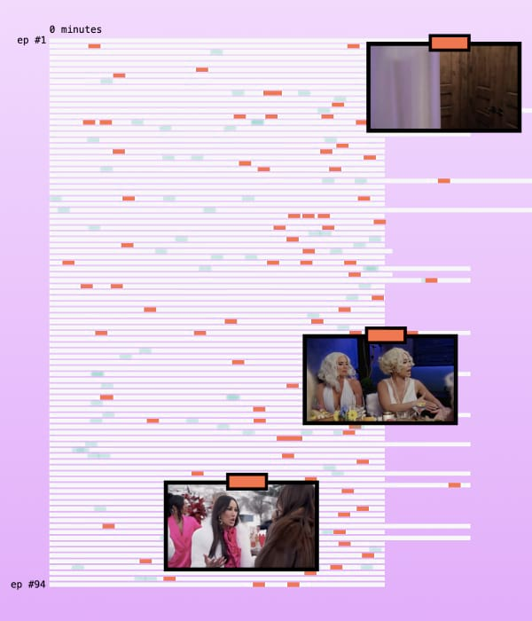
2025 Real Housewives Apologies
What we can learn from watching reality stars apologize.
everything ✨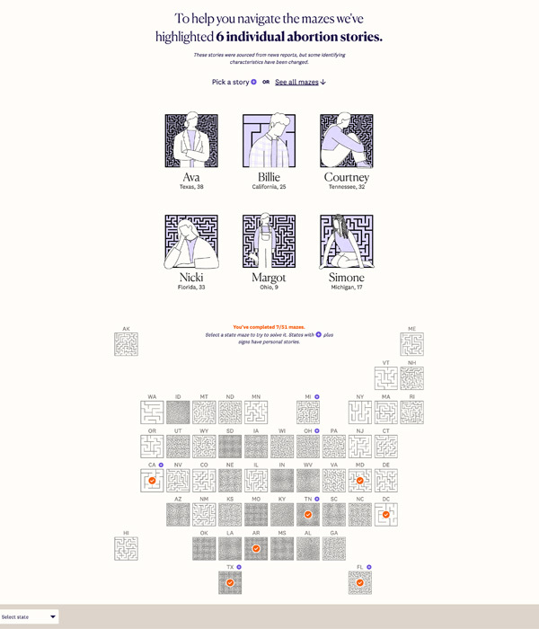
2024 Abortion Mazes
A maze for each state where the difficulty is calculated by the state's abortion policies.
data 📊 /code 💻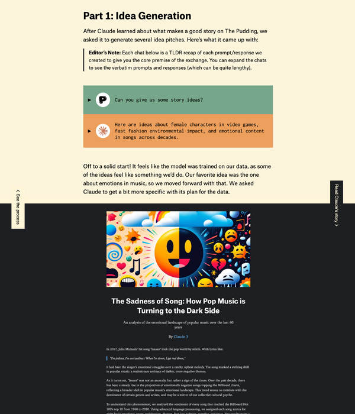
2024 AI Experiment
We had AI attempt to make a data-driven story like we do at The Pudding.
design 🎨 /code 💻 /story ✏️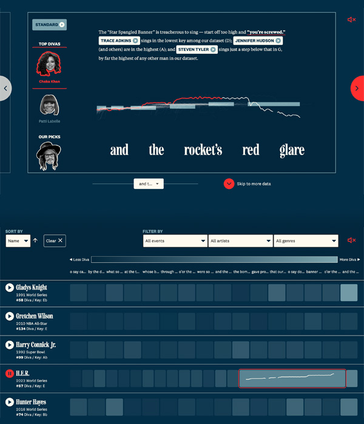
2024 National Anthem Divas
We listened to 138 National Anthem performances so you don't have to. Here are the biggest divas.
data 📊 /code 💻 /story ✏️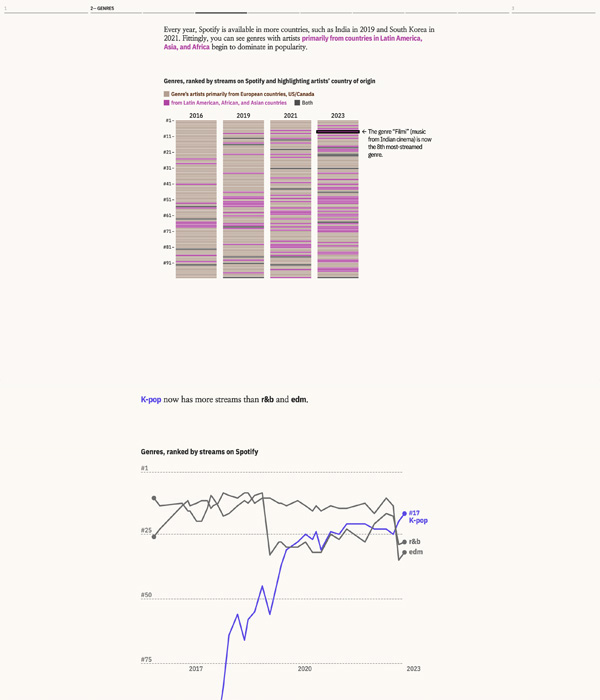
2023 Spotify Genres
Spotify tracks over 6,000 genres—everything from "rock" to "stomp-and-holler." Here's why that's cool.
code 💻 /editor ✏️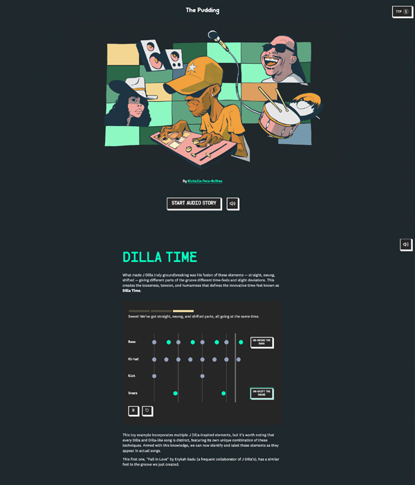
2023 Wonky Rhythms
I break down J Dilla's signature off-beat timefeel.
everything ✨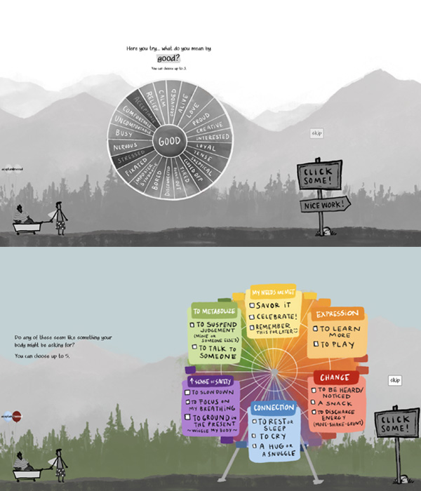
2022 Emotion Wheel
A journey of emotional awareness, where we uncover the power of naming and visualizing your feelings.
design 🎨 /code 💻 /editor ✏️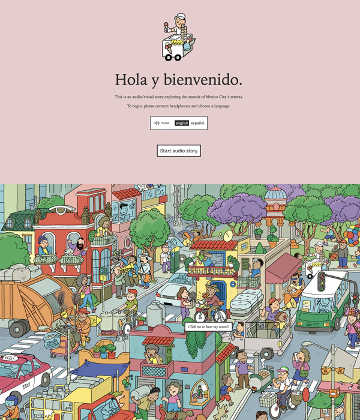
2022 The Sounds of CDMX
Take an audio tour of Mexico City, seen through its street vendors.
design 🎨 /code 💻 /editor ✏️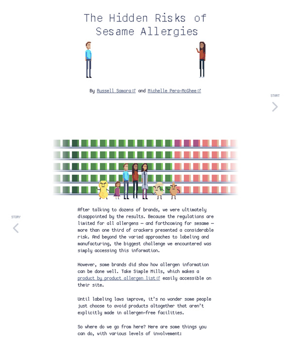
2021 Sesame Allergies
Investigating 200 cracker brands to learn about food allergies and labeling.
data 📊 /design 🎨 /code 💻 /story ✏️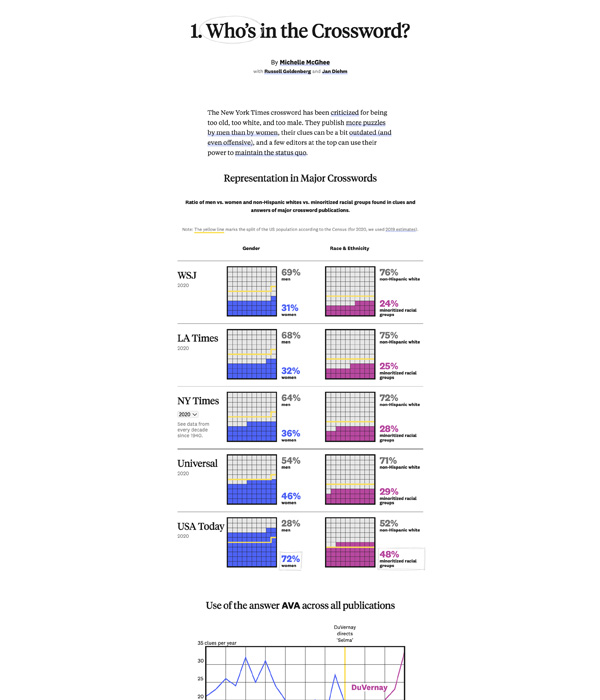
2020 Who's in the Crossword?
Crosswords are known for being too old, too white, and too male. I investigated whether the data backed that up.
data 📊 /code 💻 /story ✏️